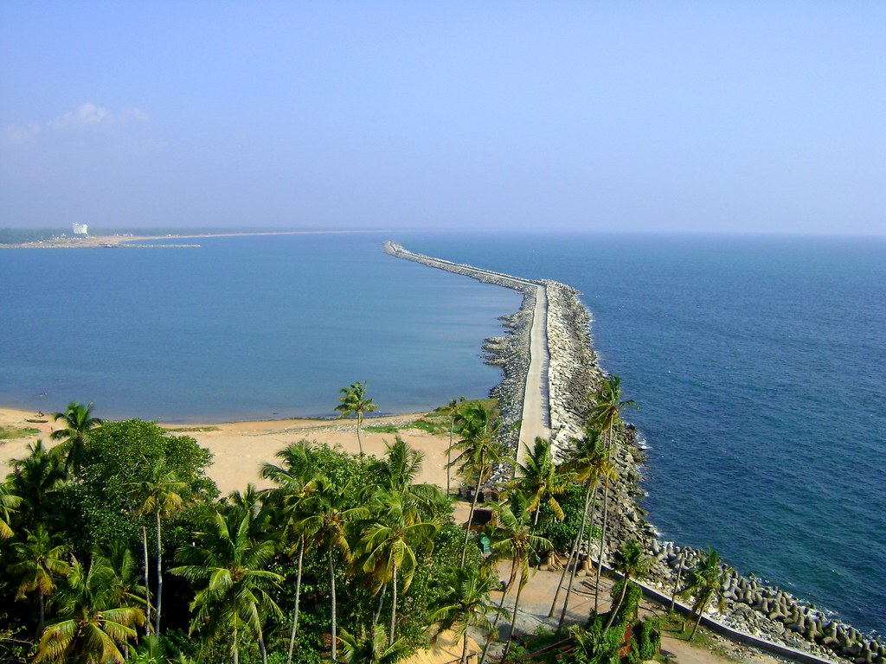

Thangassery Beach
Nestled along the coastline of Kollam, Kerala, Thangassery Beach is a captivating haven that seamlessly blends natural beauty with historical charm. The golden sands and clear waters provide a tranquil setting for relaxation and leisurely strolls. What sets it apart is the rich tapestry of history woven into its landscape, evident in the remnants of Portuguese and Dutch forts.
The iconic Thangassery Lighthouse stands as a testament to centuries past, adding a unique dimension to the beach experience. This historical backdrop invites visitors to explore the cultural heritage of the region while enjoying the coastal beauty. Thangassery Beach thus becomes not just a scenic retreat but a journey through time, where the echoes of the past resonate with the soothing sounds of the sea.
Jatayu Earth's's Habitat
Located in proximity to Kollam, Jatayu Earth's's Habitat is a unique rock-themed park featuring the colossal Jatayu sculpture, considered the world's largest bird sculpture. This park seamlessly integrates adventure and mythology, offering activities like rock climbing, trekking, and zip-lining amid stunning landscapes. The park's concept, inspired by the mythical bird Jatayu from the Indian epic Ramayana, adds a cultural and symbolic layer to the adventurous experience, making it a must-visit for both thrill-seekers and those intrigued by mythological narratives.
Palaruvi Waterfalls

Nestled near Kollam, Palaruvi Waterfalls is a captivating natural spectacle surrounded by lush greenery. The name "Palaruvi," meaning "stream of milk," perfectly captures the waterfall's milky white appearance as it gracefully descends. The journey involves a trek through the verdant landscape, adding an adventurous element to the experience.
The cascading waters and pristine surroundings make Palaruvi a refreshing haven, enticing nature enthusiasts and adventure seekers alike. The lush greenery forms a captivating backdrop, enhancing the allure of this picturesque destination. As one stands in awe of Palaruvi's beauty, the experience becomes a celebration of nature's grandeur, making it a must-visit for those seeking a rejuvenating escape.